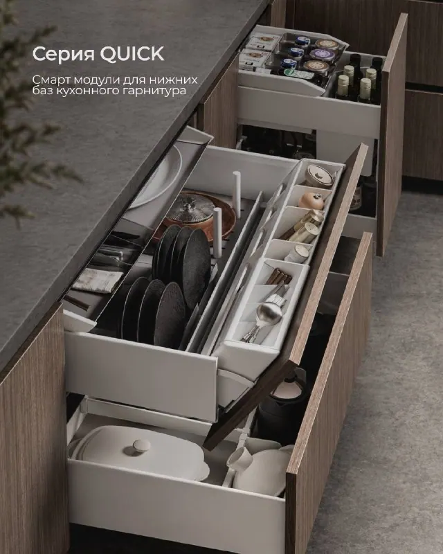

Большое блюдо неудобно доставать из-под стопки тарелок? В выдвижном смарт модуле Tourbillon Quick для тарелок посуду можно хранить вертикально. А еще при открывании фасад наклоняется на 30° , и можно взять приборы или другие кухонные принадлежности, не выдвигая ящик. Для небольших принадлежностей предусмотрен внутренний выдвижной…
Higold RussiaО выставке

Альбом · 6